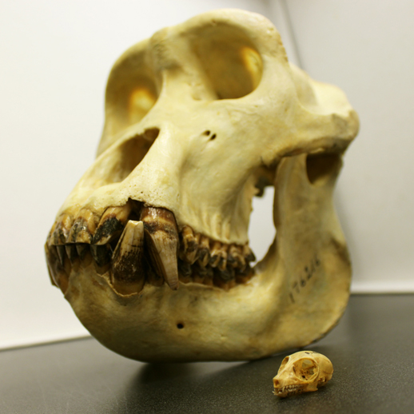

Home
Research
Publications
CV
Outreach
GitHub

Outreach
Threesis video
Three minutes to explain my thesis!
EcoEvo@TCD blog
Trinity College School of Natural Science's
blog
The Easter bunny’s origins are linked with climate change
A review of
Ge et al's 2013 PLoS ONE
paper on lagomorpha evolutionary history.
Hopsolete Trees
How to brew phylogenies, or not.
Gould Mine
A view of Gould's popular science legacy.
3D dinosaurs are bringing down the Ivory Tower
The Sagan effect on palaeontology?
Levels of Selection
A review of Okasha's
Evolution and Levels of Selection
book.
A brave new world of monkeying around with trees
A review of
Schrago et al's 2013 Evolutionary Biology
paper on applying total evidence method on Plathyrrhini.
How do Lego cars evolve?
Review of
Folmer Bokma's talk at ESEB
in august 2013.
A Raptor-ous Reception
Pictures blog post of
Dublin Falconry
show on Trinity Campus.
The Placental mammal saga; special summer double episode
A review of
Springer et al 2013
and
O'Leary et al 2013
on the Placental Mammals origins debate.
Morphometrics are fantastic!
François Gould
's morphometrics workshop.
An army of skeletons with lasers
3D morphometrics.
If you please – draw me a dino…
Dinosaur's drawing history.
We need Tarzan to fill the gaps!
A review of
Stevens et al's 2013 Nature
paper on Oligocene primates evolution.
Hide and seek with a T-Rex in a drawer
Pictures blog post of the
Smithsonian's paleobiology collections
.
Dinosaurs are useless if they don’t go in trees!
My perspective on why should one add fossils in trees.
Palaeo-poetry and placental mammals
A review of
O'Leary et al's 2013 Science
paper on the origin of Placental Mammals.
Hey Tree of Life! How’s it growing?
A review of
Mindell's 2013 Systematic Biology
paper on the evolution of the Tree of Life's metaphor.
World’s ending: enough time to read this?
The timing of mass extinction events.
Sex on the beach?
Tetrapod's early evolution.